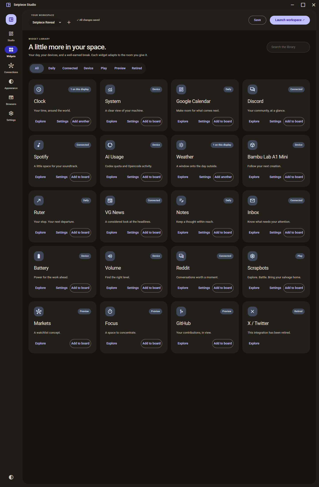
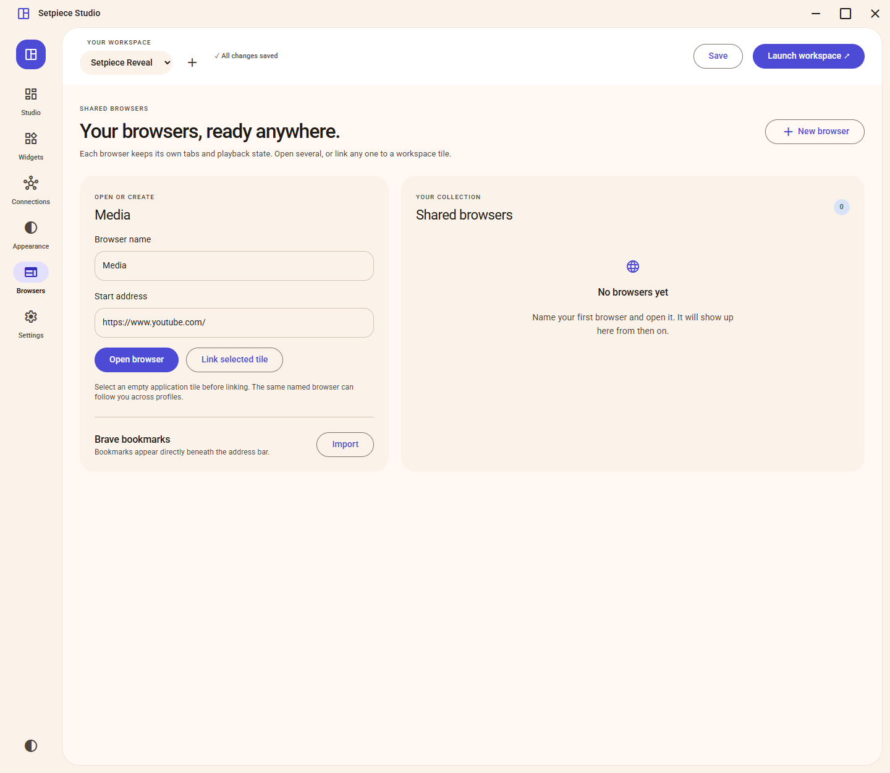

Arrange your apps
Move and resize tiles to make a layout that fits your work and your display.
A workspace manager for Windows
Bring your apps, everyday widgets, and named browsers into a workspace that feels like yours.
Your layouts. Your displays. Your way of working.

A calmer desktop, by design
Setpiece turns a display into a considered workspace. Place the applications you already use, add a widget when it helps, and keep named browsers close at hand.
One saved layout. A little more breathing room.
SETPIECE / WINDOWSA 20-second look inside
A short reveal made from real Setpiece screens in an isolated demo profile. The Weather tile is disconnected; no account integration is presented as live.
Download the videoA workspace that moves with you
Move and resize tiles to make a layout that fits your work and your display.
Add a Clock, notes, or other widgets to the space where they are useful.
Keep named browsers and their tabs organized alongside your workspace.
Choose light or dark, set an accent, and pick a wallpaper for each profile.
A browser with a place in the plan
Setpiece includes its own Edge WebView2 browser, so a page can live in the same tiled workspace as your apps and widgets.
01 / INTEGRATED BROWSING
Create named browsers such as Research or Media, then link one to a workspace tile. Setpiece saves each named browser’s open tabs so you can reuse it across profiles, and keeps web sessions in its local browser profile. The compact toolbar has tabs, navigation, search and address, plus optional imported Brave bookmarks.
02 / CONTAINED FULLSCREEN
Turn on Keep fullscreen inside tile in the selected browser tile’s settings. A fullscreen video or site expands only to that tile, and the browser toolbar hides while it plays. Your other tiles stay visible; switch the option off for display-wide fullscreen.
A look inside
Real Setpiece screens from the isolated reveal profile. Weather is disconnected; previews and integrations are labeled in the app.



Start with a little space
Give a layout a name and choose the display it belongs to.
Arrange tiles, assign open apps, and add widgets or a named browser.
Launch the layout, then stop it to restore your original windows and taskbars.
Hardware, account connections, and native window behavior vary by system; see the verification notes for current limits.
Made for the Windows desktop
Setpiece keeps profiles and browser data local. Optional service connections are configured separately.
A little more room
Free to use, modify, fork, and share for noncommercial purposes. Commercial use is not permitted by the PolyForm Noncommercial 1.0.0 license.